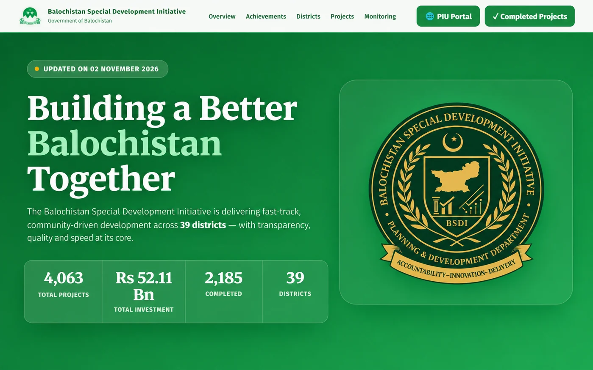
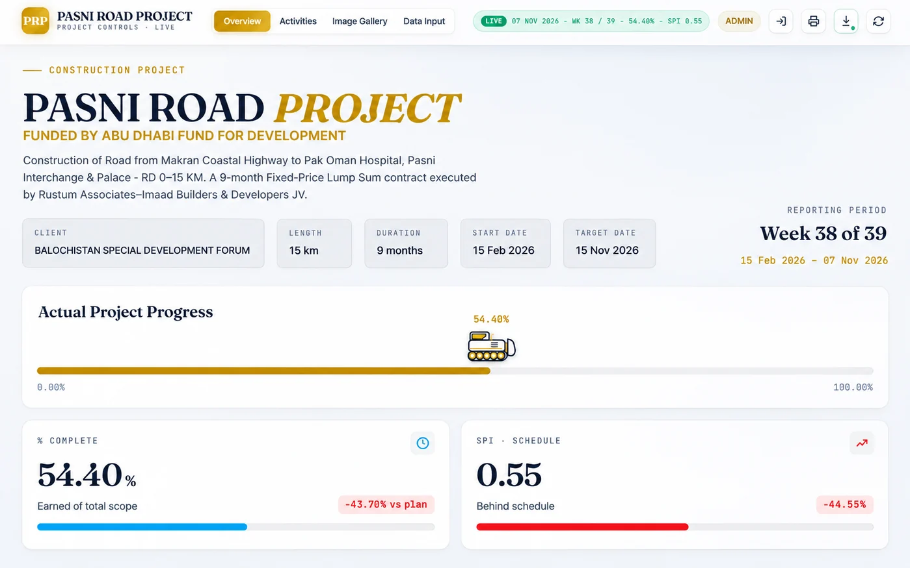
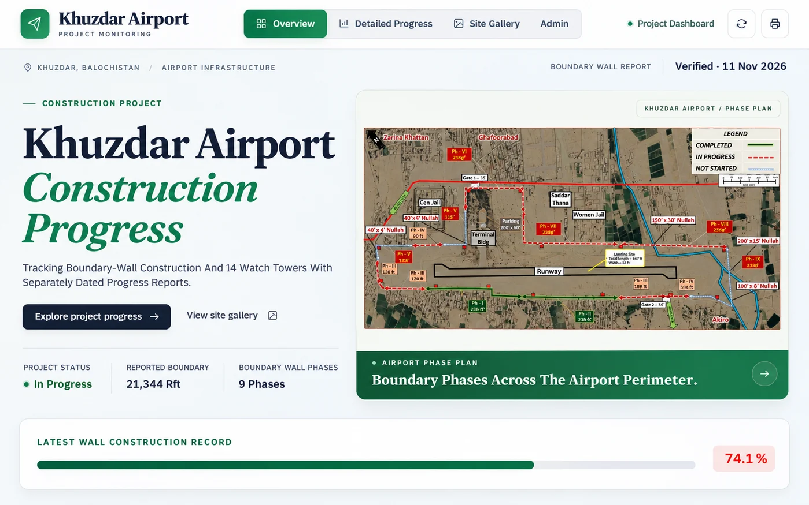
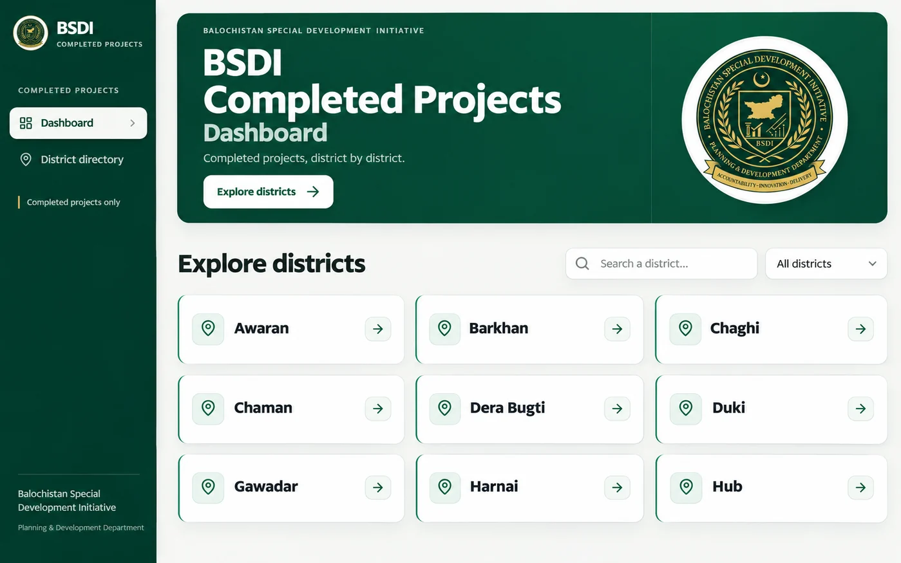

Websites that explain your business
Responsive pages, useful navigation, contact journeys and deployment.
Muhammad Saqib Kakar · Software Engineer
I help businesses and agencies turn clear requirements into responsive websites, database-backed tools and reliable software improvements.
Quetta, Pakistan · Remote · 8–12 hours per week
Fixed-scope projects outside my full-time BSDI role.
Download CV (PDF)BS Software Engineering · BUITEMS
What I can help with
Responsive pages, useful navigation, contact journeys and deployment.
Dashboards, reporting, database-backed features and API integrations.
Focused bug fixes, mobile improvements, automation and hosting support.
Selected work

Public-sector website
Node.js · Responsive web · Programme information

Restricted project system
ASP.NET Core · Razor Pages · SQLite

Restricted project system
Node.js · Progress dashboards · Reporting

Project reporting portal
Node.js · Vite · MySQL
Start small
Send the problem, the deadline and what a successful result looks like. We can agree a paid scope before work begins.